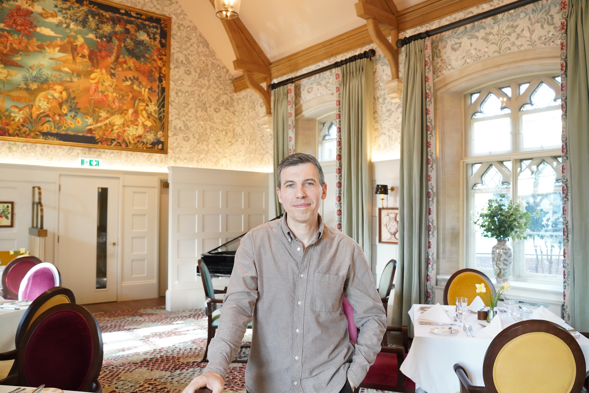

I am a professional chef with over 20 years of experience in the culinary industry, working across London kitchens and developing my skills in fine dining, premium hospitality and modern gastronomy. My journey has taught me that great cooking is not only about technique and ingredients, but also about discipline, creativity, consistency and attention to detail. I am passionate about exploring new flavours, seasonal ingredients, fermentation, pastry and contemporary culinary techniques. I believe every dish should have its own identity, balance and purpose. My approach combines classical foundations with curiosity, experimentation and a constant desire to improve. Beyond the kitchen, I am interested in photography, visual design and creative projects. I enjoy capturing food, atmosphere and moments through the lens, and bringing together culinary craftsmanship and visual storytelling. My ambition is to continue growing as a chef, creative professional and entrepreneur.